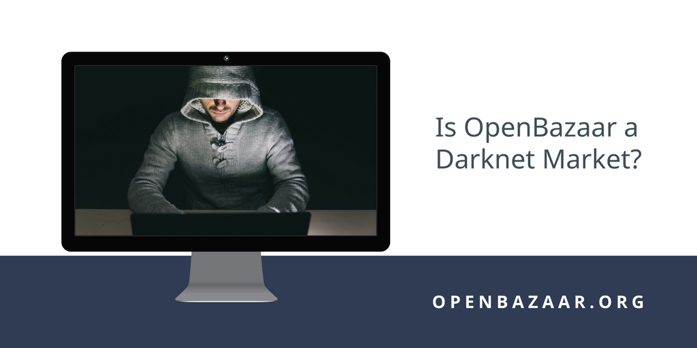

OpenBazaar is a new way to do commerce online, and people are often unclear exactly how it is different from traditional ecommerce platforms. We sometimes have people look at the features of this network and confuse OpenBazaar with so-called “darknet markets.”
What are darknet markets, and how is OpenBazaar different?
Darknet Markets
Marketplaces which cater to people engaged in illicit activity have been around for thousands of years, and it’s no surprise that in the digital age they can also be found online.
Since the early days of the public Internet there have been forums and communities of people discussing cybercrime and other illegal activity. In recent years a combination of new technologies gave rise to a new type of marketplace called the darknet market. Darknet markets have the following characteristics:
- They cater to illicit commerce, mostly focused on drugs.
- They are centralized marketplaces controlled by an individual or small group and run for profit.
- They require the use of technology such as Tor to access the market in order to keep the marketplace (and its users) anonymous.
- The payment method for transactions is cryptocurrencies, particularly Bitcoin.
The Silk Road, launched in 2011, was the first darknet market. It was taken down by law enforcement a few years later. Other darknet markets have sprung up since, but many are shut down by law enforcement eventually.
Of the darknet markets that aren’t shut down, several performed what is called an “exit scam” by abruptly shutting down the site and taking all of the users’ Bitcoin deposits, in some cases worth millions of dollars.
Is OpenBazaar a Darknet Market?
Of the four characteristics of darknet markets explained above, OpenBazaar currently only has one thing in common with darknet markets: It uses Bitcoin for payments.
Otherwise, it differs in some important ways:
- It doesn’t cater to illicit commerce.
- It isn’t a centralized marketplace run for profit.
- It doesn’t use anonymizing technology by default.
- Exit scams aren’t even possible because no central organization controls the OpenBazaar network or escrow system.
Darknet markets and OpenBazaar differ in another way as well. In a darknet market the marketplace operator takes on the most risk by running the site. They are the target for law enforcement, and it means the users of the platform take on less risk by only needing to access the darknet market via a special web browser. OpenBazaar is different; anyone using the software for illicit commerce needs to run the software on their own computer (or a virtual private server they rent) and carry some of that risk themselves. There is no marketplace operator for law enforcement to target, but each individual user engaged in illicit commerce could become a target instead.
OpenBazaar 1.0 has existed for over a year now, and the vast majority of trade on the network is simple consumer goods and services. At any given time less than 5% of listings on the network are considered “NSFW,” and many of those are legal but, well… not safe for work!
The upcoming version 2.0 release does add another point in common with darknet markets: people will be able to use Tor with OpenBazaar. However, Tor is not on by default and is not required to access the network; it’s an option for users who care deeply about their privacy. This allows users to select their own level of privacy on the network.
Illicit Commerce Not Exclusive to Darknet Markets
Often when discussing darknet markets it’s easy to forget the fact that illicit commerce happens on the regular Internet as well. In fact, due to the relatively small size of darknet markets and the vast size of the regular Internet, it’s possible that the majority of illicit activity online isn’t conducted in darknet markets at all.
ISIS terrorist have used eBay to help fund their operations. Instagram has been a popular advertising service for drug dealers for years. It’s not alone: Facebook, Craigslist, Snapchat, and basically all popular communications platforms online have been used for dealing drugs or other illicit activity. No matter what the protocol, network, or platform are intended to be used for, people can use them in unintended ways.
The websites mentioned above are centrally controlled and can take some steps to reduce illicit activity on their own platforms. OpenBazaar is not centrally controlled and so no one is able to directly stop illicit activity on the network, but there are still ways to minimize illicit use of the platform.
One such method is the use of search engines refusing to index listings or stores they don’t want their users to see. The default method of product discovery in the upcoming 2.0 release is through third party search providers, and those providers are likely to remove any listings that violate the laws in their jurisdictions, meaning most OpenBazaar users won’t be able to access them on the network unless they intentionally bypass the search engines themselves. OpenBazaar users will also be able to manually block stores to prevent them from displaying ever again, and can report listings to the search providers as well.
OpenBazaar is a protocol and network for trade. It’s a neutral technology that can be used for many types of transactions and it’s not built to cater to any particular type of commerce. So far, this has meant that the OpenBazaar network tends to reflect society in general: a few people engage in illicit activity, but the vast majority don’t.
OpenBazaar was built to be a global marketplace for free trade. The users of the agnostic protocol and network determine what OpenBazaar looks like. We’re excited to watch the future of ecommerce unfold.
Do you want to help build this with us?
Download OpenBazaar right now to start buying or selling in minutes or just see what's for sale at OpenBazaar.com.
Developers, join us on Github to contribute to this open-source project!